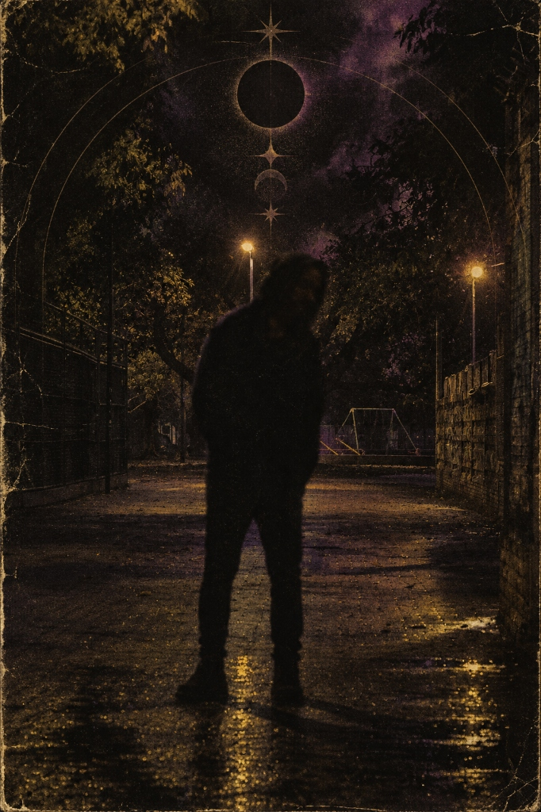
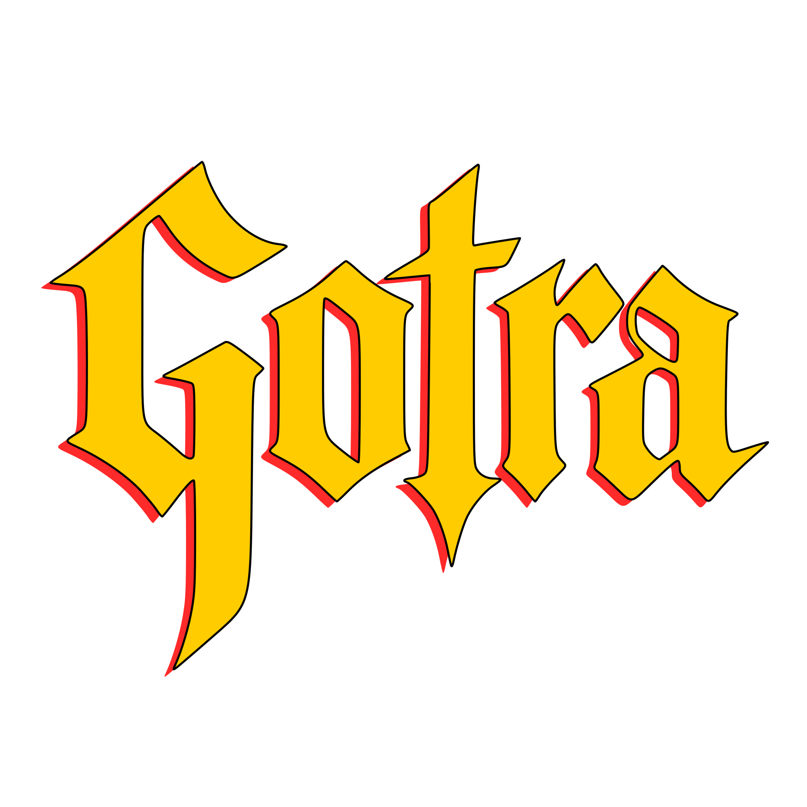
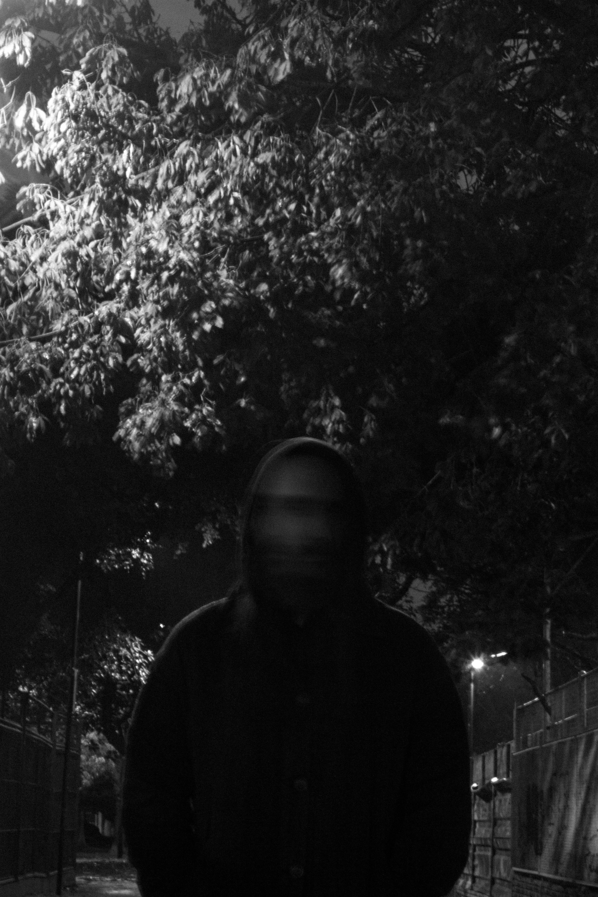

The Dark Melody
«"Muerto Al Fin es el intento de romper las cadenas del miedo". Entrevista exclusiva sobre la sombra, Black Sabbath y la escena pesada.»
Leer Artículo
Doom Metal Experimental Occult Rock
«Hay músicas que buscan escapar del ruido del mundo y otras que prefieren internarse en él hasta encontrar algo al otro lado.»
— Delta80
Bardo Thodol & Böcklin
«Muerto al Fin» es, ante todo, un pasaje sónico para dejarse llevar. La música conduce un tránsito inspirado en las lecturas del Libro Tibetano de los Muertos y la pintura La Isla de los Muertos de Arnold Böcklin. A través de la imagen de un cuerpo transportado en una barca, la canción explora la disolución del yo y la impermanencia de todo lo que nos rodea.
"Creo que al final, lo que más me inspiró es la idea de la reencarnación como una reflexión sobre el presente personal y la impermanencia: el hecho de que mañana puede acabarse todo tranquilamente y que el olvido no está mucho más lejos de ahí."— Jules
Reseñas & Cobertura de Medios